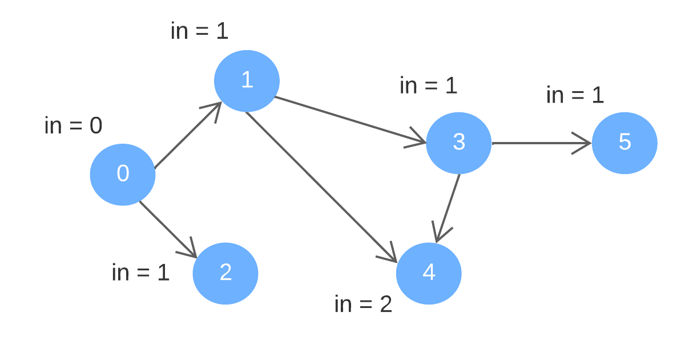
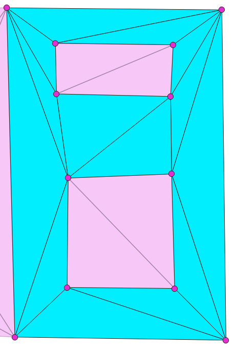

Kahn’s Algorithm for Topological Sorting
*The content is intended for self-study and sharing, the original blog is: INTERVIEW KICKSTART - Kahn’s Algorithm for Topological Sorting.
In graph theory, topological sorting, often referred to as topological ordering, is primarily
employed to determine the sequence of nodes in a directed acyclic graph (DAG).
In a DAG, vertices have interdependencies due to the existance of directed edges.
For instance, given two vertices U and V, a directed edge (U, V) implies that V
can be reached from U, while the reverse is not true - U cannot be reached from V.
In this context, V is regarded to have a dependency on U.
The topological order is essentially a linear arrangement of all the vertices within a DAG.
It provides a systematic depiction of feasible sequences originating from certain vertices
and concluding at others.
Now let's delve into some fundamental yet crucial concepts regarding a DAG:
- A DAG contains at least one vertex with the indegree zero.
- A DAG contains at least one vertex with the outdegree zero.
Let us see an example:

Directed edges: {0, 1}, {0, 2}, {1, 3}, {1, 4}, {3, 4}, {3, 5}
"in" represents "indegree"
Order of removal: 0, 1, 2, 3, 4, 5
A possible topological order: 0, 1, 2, 3, 4, 5
Note that the sequence is not the only possible topological order. For instance, 0, 2, 1, 3, 4, 5 is also a valid topological order.
The process of Kahn's algorithm:
Step 1: remove node 0 (with indegree = 0) and its outward edges. Update the indegree of the deleted edges’ destination nodes (1 and 2).
Step 2: remove node 1 and 2, alongside the outward edges. Update the indegree of node 3 and 4.
Step 3: remove node 3 and its outward edges. Update the indegree of node 4 and 5.
Step 4: remove node 4 and 5.
Given a DAG, denoted as G and represented with an adjacency list, the algorithm can be summarized as follows:
- Calculate the indegree for all nodes in G.
- Identify a node with an indegree of 0, indicating no incoming edges.
- Remove the identified node from G and add it to the topological ordering.
- Remove the outgoing edges from the removed node in G.
- Decrement the indegree of the connected destination nodes (those connected by the edges removed in the previous step).
- Repeat these steps until no nodes are left with zero indegree, signifying that either all nodes have been traversed or a cycle has been encountered.
// pseudo code for an example
queue to store faces; // for BFS
add starting face to the queue;
while (queue is not empty)
{
currentFace = queue.front();
if (current face has not been processed yet) { // if not yet been processed, process it
process it;
mark it as processed;
}
queue.pop(); // pop the current face from the queue
// Add all possible finite neighbours - not crossing constrained edges and not yet processed
for (int i = 0; i < 3; ++i) {
neighborFace = currentFace->neighbor(i);
if (neighborFace is a finite face) { // only add finite neighbors
commonEdge = common edge of (currentFace, neighborFace);
if (commonEdge is not constrained && neighborFace has not been processed yet) {
add the neighborFace to the queue
}
}
} // end for: all neighbors (including infinite neighbors)
}
The processed faces are shown below(highlighted in cyan)
